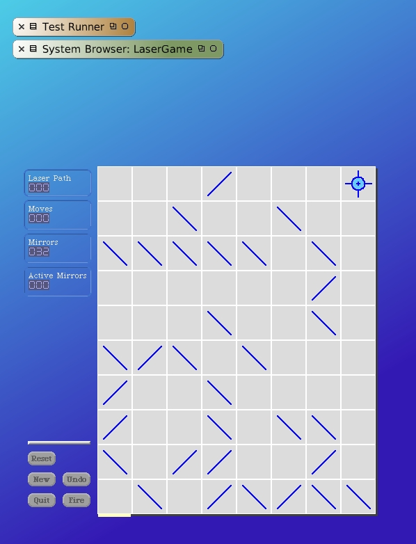

Minmize your class browser so you can see what happens. Then select the contents of the Workspace and execute.
Our game now looks like it's part of the Squeak desktop and we have that nice gradient blue shaded fill. You may have noticed already that if you click on the "control panel" portion of the Laser Game morph you can still drag the morph around our desktop. Let's tackle that next. When we deploy we don't want the morph to be moved around on our Squeak desktop. Furthermore, we want to be centered whenever the desktop for Squeak resizes. Close the Laser Game before we continue.
For the LaserGame class, change the #initializeForGrid: instance method.
initializeForGrid: aGrid
super initialize.
self moves: 0.
self grid: aGrid.
self boardForm: (Form extent: (self class boardExtentFor: self grid) depth: Display depth).
self boardForm fillColor: LaserGameColors gameBoardBackgroundColor.
self class fullWorld ifTrue: [
self setToAdhereToEdge: #adjustedCenter.
self beSticky].
self setExtent.
self setupMorphs.
self drawGameBoard.
self updateCounters.
Just before we set the extent for our morph, we now make a check if the Full World situation is in effect. If it is we use the ability of any morph to adhere itself to an edge. In this case we use the interesting definition of "#adjustedCenter" to specify the center. In the Full World condition this will cause our Laser Game morph to seek the center of its world.
We also added the #beSticky message. We send this to the LaserGame morph when we are in the Full World situation. This will keep the morph from being picked up and dragged around by the user with normal mouse clicking.